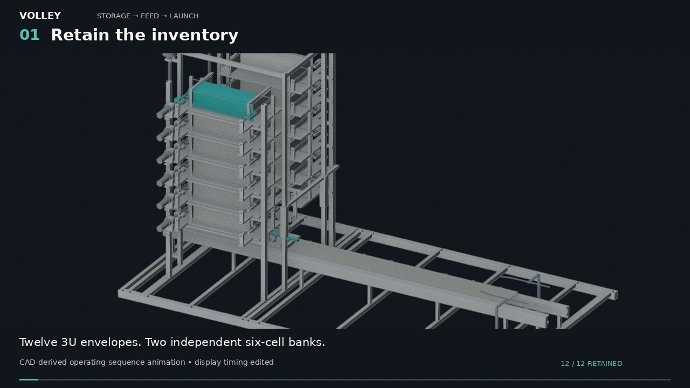
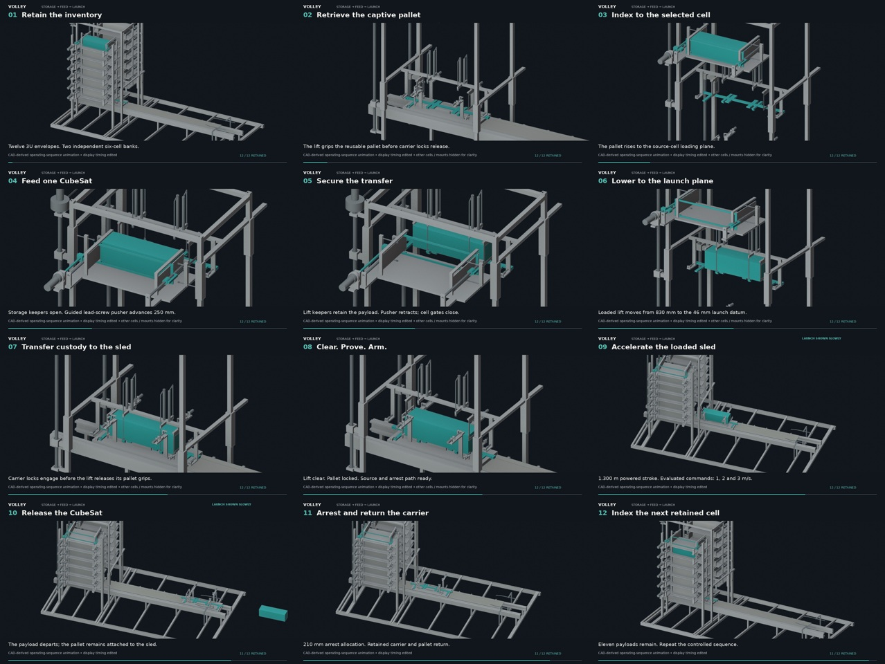
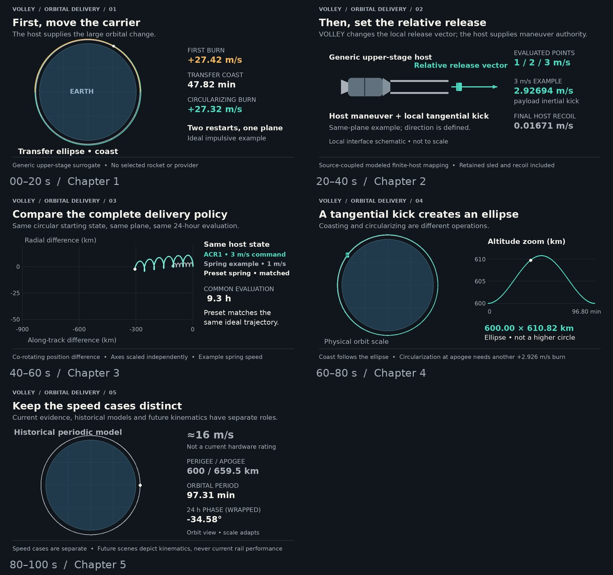

00:00 · The mechanism
Actual Blender motion of accepted CAD parts: pallet retrieval, one-cell feed, loaded lift, positive handoff, launch, arrest and return.
Watch the 70-second chapter →Follow one CubeSat through storage, guided feed, custody handoff and commanded release. Then inspect the host-assisted orbit change and a matched spring-deployer comparison.

Reduced motion is enabled. Read the transcript or still sequence below, or choose playback.
HD 1280 × 720 · 24 fps · English on-screen explanation and optional captions · silent film · playback by choice
Actual Blender motion of accepted CAD parts: pallet retrieval, one-cell feed, loaded lift, positive handoff, launch, arrest and return.
Watch the 70-second chapter →A spring-canister schematic and a powered-carrier schematic. Product details vary; prior adjustable mechanisms are acknowledged.
Watch the 20-second comparison →A generic maneuverable upper stage makes the coarse change. The commanded release sets a local relative velocity. Same-state spring and ideal preset comparisons follow.
Watch the 100-second chapter →

| Case | Role in the film |
|---|---|
| 1, 2 and 3 m/s commands | Current ACR1 computational command points. The source-coupled 3 m/s example includes finite host/sled recoil. |
| 0.2 m/s | Illustrative inertial kick outside the current evaluated command points. |
| About 16 m/s | Historical periodic-model speed used as a kinematic example; not a current ACR1 rating. |
| 1 km/s and beyond | Separate future kinematic research cases. They do not depict present rail capability. |
The coarse example uses an ideal same-plane 500 → 600 km Hohmann transfer: 27.42 m/s, coast, then 27.32 m/s circularization. The current release example enters an ellipse; reaching a higher circular orbit requires another propulsion event. The ideal preset spring matches the same ideal trajectory. No new navigation-accuracy or system-superiority claim follows from this film.
The source package contains the baked Blender scene, generators, trajectory data, inputs, captions and verification records. The original accepted source identities remain pinned; display motion is distinct from contact dynamics.